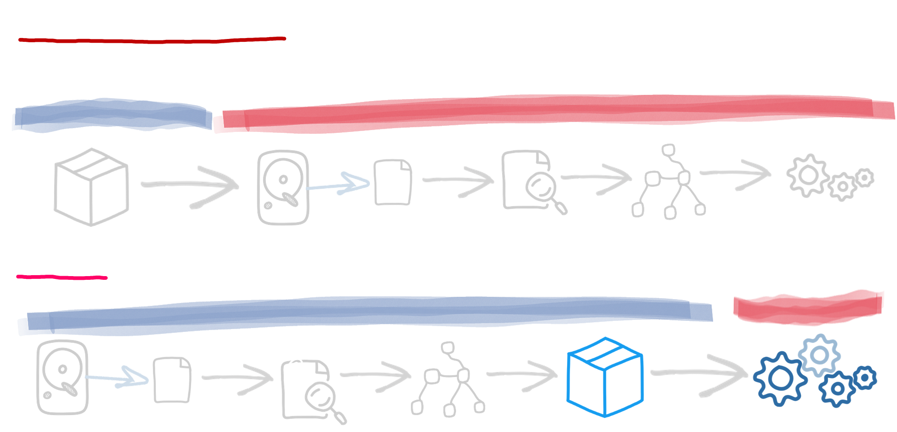

Container First
Quarkus applications are optimised for low memory usage and fast startup times.
From the outset, Quarkus has been designed around a container-first philosophy. What this means in concrete terms is that Quarkus applications are optimised for low memory usage and fast startup times in the following ways:
Build Time Processing
The central idea behind Quarkus is to do at build-time what traditional frameworks do at runtime: configuration parsing, classpath scanning, feature toggle based on classloading, and so on.
As much processing as possible is done at build time; thus, your application only contains the classes used at runtime. In traditional frameworks, all the classes required to perform the initial application deployment hang around for the application’s life, even though they are only used once. With Quarkus, they are not even loaded into the production JVM! Quarkus does not stop here. During the build-time processing, it prepares the initialization of all components used by your application. It results in less memory usage and faster startup time as all metadata processing has already been done.
Reduction in Reflection Usage
As much as possible Quarkus tries to avoid reflection, reducing startup time and memory usage. During the built-time processing, extensions can analyze the application code and the classes available on the classpath and replace reflection calls with regular invocations. The usage of dynamic proxies is also prevented by using generating custom proxy at build time.
Arc, the dependency injection framework used by Quarkus, eliminates all the reflection calls and deduces the injection graph at build time. So, when the application starts, no expensive lookups; it’s done already!
First-Class Support for GraalVM Native Images
GraalVM Native Executable support has been an essential part of the design for Quarkus from the beginning. When an application is compiled down to a native executable, it starts much faster and can run with a much smaller heap than a standard JVM. The native compiler uses aggressive dead-code elimination techniques to only embed the parts of the JVM and classes that are absolutely required by your application. Quarkus makes building optimized native executables plain easy. The build-time approach allows Quarkus to collect enough metadata on your application to fine-tune the compilation. No -H:+ReportUnsupportedElementsAtRuntime flag, no fallback, no compromise!
Native Image Pre-Boot
We pre-boot as many of the frameworks as possible during the native compilation of a Quarkus application. It means that the resulting native executable has already run most of the startup code and serialized the result into the executable: even faster startup!
Kubernetes, but also bare metal
All the techniques allowing reducing the memory usage and provide faster startup times are not only advantageous in containers. Even on bare metal, it would reduce your memory pressure, and it’s always pleasant to not have to wait 10 seconds to see your application running.
When Quarkus was designed, we didn’t focus only on containers but also on deploying Quarkus applications on container orchestrators such as Kubernetes. Quarkus build-time processing also generates the Kubernetes metadata, so your application is ready to be deployed on Kubernetes. Runtime capabilities such as health checks and metrics are exposed out of the box. Quarkus collects all the required metadata at build time to create the Kubernetes deployment descriptor and produce a container image. A single command line can deploy your application onto your Kubernetes cluster.